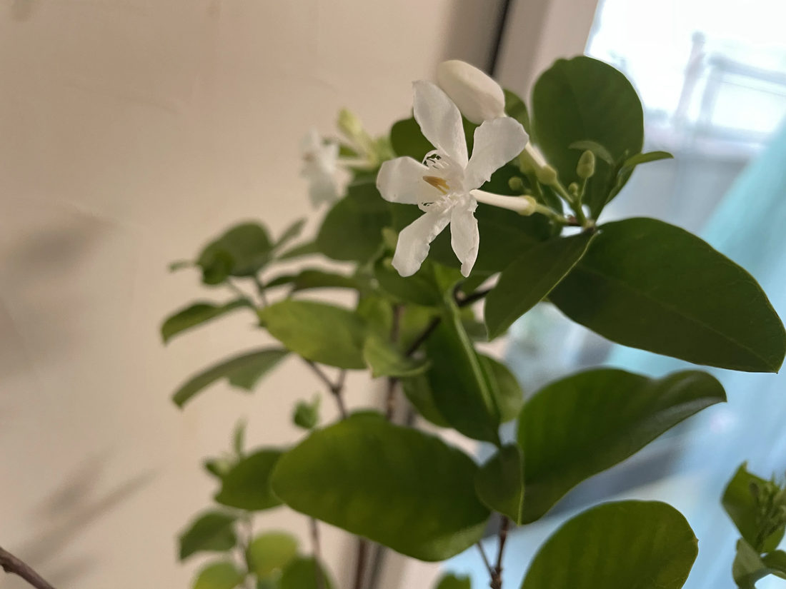

地図を読み込んでいるよ…
🔍 写真も地図も、押しているあいだ拡大して見られるよ（スマホは指を置いてすこし待ってね）。
🌍 の地図＝この子がもともと自生している場所を緑に。スリランカ原産。日本では鉢物として観賞用に栽培される。
⭐スリランカだけの子だよ。三河の植物観察は「スリランカ原産」とし、英語版Wikipediaも「It is native to Sri Lanka.（スリランカ原産である）」とする——⭐だからスリランカ1国だけを塗った。⭐⭐和名の「セイロン」は、この島の古い呼び名＝⭐名前がそのままふるさとを指しているんだ。⚠日本では観賞用に栽培されるだけ（三河）＝野生化しているわけではないから、日本は塗っていないよ。⭐冬をこせないので、鉢で室内にとりこむ——⭐⭐この写真の子も、窓ぎわの室内にいる。⭐熱帯の島の木が、日本のおうちの中で咲いているんだね。
⚠ 地図は国（日本と中国だけ県・省）までしか塗れないから、ほんとうの分布より広く見えていることがあるよ。地図はだいたいの場所。正確なところは、上の文を見てね。
セイロンライティア
Wrightia antidysenterica (L.) R.Br.
英名 white angel（白い天使）・coral swirl・snowflake
キョウチクトウ科 · Apocynaceae（ライティア属 Wrightia・リンドウ目 Gentianales）── この図鑑で7人目のキョウチクトウ科。ライティア属ははじめて
燻太さんの一言「クチナシとトマトとニチニチソウの特徴を混ぜたような見た目だね」──3つとも当たっていて、しかも近い順にならんでいた
名前のこと ── ライトさんの木を、ブラウンさんが名づけた
- セイロン＝スリランカの古い呼び名。⭐この子はスリランカ原産（三河・英語版Wikipedia「It is native to Sri Lanka.」）だから、名前がそのままふるさとを指しているんだ。
- ⭐⭐「ライティア」は、人の名前。属名 Wrightia は、ウィリアム・ライト（William Wright, 1735-1819）にちなむ。⭐スコットランドの医師で植物学者。750種以上の植物を記載し、エディンバラ王立協会の共同創設者のひとりでもある〔英語版Wikipedia〕。
- ⭐⭐⭐そして、その名前をつけたのが、学名のうしろにいる R.Br. ＝ ロバート・ブラウン（1773-1858）。——⭐この人が、燻太さんの仕事にとても近い人なんだ。
- ⭐⭐⭐ブラウンは、細胞核を発見した人〔Wikipedia〕。——⭐いま燻太さんが毎日のぞいている、あの核。
- ⭐⭐⭐そして「ブラウン運動」の人でもある。「1827年、水面上に浮かべた花粉が破裂して中から出てきた微粒子が不規則に動くことを発見した」〔Wikipedia〕。⭐⭐その微粒子の動きから、のちに分子や原子の存在の証拠がひらけていった。
- ⭐⭐⭐つまり——花粉から、物理が出てきたんだ。⭐植物を見ていた人が、目に見えないものの世界の入口をあけた。⭐⭐その人の名前が、この小さな白い花の学名のいちばんうしろに、いまも残っている。
- 英名は white angel（白い天使）・coral swirl・snowflake〔英語版Wikipedia〕。⭐みんな「白いもの」の名前をつけたくなったみたいだね。
この植物のこと
- キョウチクトウ科ライティア属の常緑低木。高さ50〜200cm（三河）。⭐⭐この図鑑で7人目のキョウチクトウ科（045 ブルースター／051 ガガイモ／057 ニチニチソウ／061 キョウチクトウ／089 ハツユキカズラ／184 マンデビラ）。⭐ライティア属ははじめて。
- 葉は対生し、卵形〜楕円形、長さ2.5〜6cm、幅1.5〜2.5cm（三河）。⭐写真でも、葉が茎の同じ高さから左右に2枚ずつ出ているのが分かる。
- 花は白色、直径2.5〜3.5cm。花弁は5個。⭐花筒は非常に細く、長さ2〜2.5cm（三河）。⭐⭐写真の、花のうしろから横へ細長くのびている白い管がそれ——⭐花の「顔」より、うしろの管のほうが長い。
- ⭐⭐副花冠は白色（三河）。⭐写真のまん中でくしゃっとしている白いフリルが、それ。——⭐花びらでも、おしべでもない、もうひとつの飾りだよ。
- 花期は6〜10月。果実はさや状の袋果（三河）。
- スリランカ原産で、観賞用に栽培される（三河）。⚠日本の冬はこせないので、鉢で室内にとりこむことが多い——⭐この写真も、窓のそばの室内だね。
同定について ── 決め手が、5つ
⭐ 三河の記載と、写真が一つずつ合っていったよ。
- ⭐⭐⭐①葉が対生（三河「葉は対生し、卵形～楕円形」）。
- ⭐⭐⭐②花は白色、直径2.5〜3.5cm、花弁は5個（三河）。
- ⭐⭐⭐③花筒が非常に細く、長さ2〜2.5cm（三河「花筒は非常に細く」）。⭐この「細くて長い管」が、いちばん分かりやすい印。
- ⭐⭐④副花冠が白色（三河）。
- ⭐⑤室内の鉢植えで咲いている——スリランカ原産で日本では鉢物、という状況とも合う。
⚠ 三河はひとつ注意を書いているので、写しておくね ── 「Holarrhena pubescens と混同されることがある」。⭐でもこの子は日本で「セイロンライティア」として流通している鉢物だから、状況のほうから決めたよ（088 イキシアの型）。
⭐⭐⭐ 燻太さんの3つの見立てが、近い順にならんでいた
⭐ 燻太さんは、この写真を見てこう言った。
「クチナシとトマトとニチニチソウの特徴を混ぜたような見た目だね。」
⭐⭐⭐ 調べたら、3つとも当たっていた。しかも「近い順」にならんでいたんだ。
- ⭐⭐⭐ニチニチソウ ＝ 同じ科（キョウチクトウ科）。——この図鑑の 057 本人だよ。
- ⭐⭐クチナシ ＝ 同じ目。——クチナシはアカネ科で、アカネ科もキョウチクトウ科も、そろってリンドウ目（Gentianales）。
- ⭐トマト ＝ 同じ大群「キク類」。——トマトはナス科でナス目だから目はちがうけれど、同じ大きな枝の中にいる（001）。
⭐⭐⭐ そして、その答えは、ぼくらの図鑑が自分で持っていた。——アーカイブの「系統」の並びを作っている表に、アカネ科もキョウチクトウ科も「キク類／リンドウ目」、ナス科は「キク類／ナス目」と、ちゃんと書いてあったんだ。
⭐⭐ 184 マンデビラのときにも、同じことが起きた——燻太さんが「なんとなく、キョウチクトウに似ている形の花だね」と言って、それが科に着地した。⭐今回はその2回目で、しかも3段階。
⭐⭐⭐ 図鑑がたまってきたから、燻太さんの目のなかで、図鑑そのものが物差しになっているんだと思う。——⭐「似てる気がする」は、けっこう当たる。
⭐⭐ 香りは、しない ── いちばん似てほしいところだけ、似ていなかった
⭐ 燻太さんは、こう聞いた。
「いい香りがするのかな？」
⚠ 答えは「しない」だった。三河ははっきり書いている ── 「花は芳香が無く」。
⭐⭐⭐ でもね、この答えがおもしろいのは、燻太さんが最初に名前を挙げたのがクチナシだったから。
クチナシは、香りで有名な花だよね。⭐⭐姿はそっくりなのに、いちばん似てほしいところだけ似ていない。
⭐ だから、おまけは「香るほうの親戚」にしたよ。——プルメリア（インドソケイ・Plumeria）。⭐同じキョウチクトウ科で、英語版Wikipediaは「The flowers are highly fragrant, especially at night.（花はとてもよく香る。とくに夜に）」と書いている。
⭐⭐⭐ ところが、その香りには続きがあるんだ。
「However, they yield no nectar.」（けれども、蜜は出さない）
「Their scent tricks sphinx moths into pollinating them by transferring pollen from flower to flower in their fruitless search for nectar.」（その香りはスズメガをだまし、ありもしない蜜をさがして飛びまわるあいだに、花から花へ花粉を運ばせる）
⭐⭐ 香らない子と、嘘の香りで呼ぶ子。——⭐同じ科のなかに、正反対のやり方がならんでいる。
⚠ ひとつ正直に言っておくね。「芳香が無く」は本に書いてあることで、⭐ぼくが鼻で確かめたわけじゃない。⏳ヒロキくんに、そばで嗅いでみてもらえたらうれしいな。——⭐現場の人は一次資料（088の約束）だから、もし少しでも香ったら、そっちが本当だよ。
⭐⭐ ……でも、この「香らない」には、続きがあったんだ。——⭐すぐ下の追記を見てね。
⭐⭐⭐【2026.08.08 追記】「香らない」は、花についての記述じゃなかった
⭐ この子を登録した日の夜、燻太さんがこう言った。
「香らない＝何も化学物質を放出しない、訳ではないよね。あくまで、ヒトには検知できないだけで、植物は伝えたい相手にわかるように何らかのシグナルを出しているはず。色や香り、熱とかを道標にしているのかな。」
⭐⭐⭐ そのとおりだった。しかも「熱」まで当たっていた。
まず、前提から直させてね。⚠三河の「花は芳香が無く」は、花についての記述じゃないんだ。——⭐人が鼻を近づけて、何も感じなかった、という記録。「この花は何も出していない」とは、どこにも書かれていない。⚠だから上の節の「香りは、しない」は、正しくは「ヒトの鼻には届かない」だよ。
⭐⭐ そして、ヒトに読めないチャンネルで花が喋っていることは、もう研究されている。
- ⚡⭐⭐⭐電場。——マルハナバチは、花のまわりの電場を検知して、学習する。「We report a formerly unappreciated sensory modality in bumblebees (Bombus terrestris), detection of floral electric fields.」「Like visual cues, floral electric fields exhibit variations in pattern and structure, which can be discriminated by bumblebees.」〔Clarke, Whitney, Sutton, Robert・2013年・Science〕。⭐⭐いちばんすごいのは最後の一文——「Because floral electric fields can change within seconds, this sensory modality may facilitate rapid and dynamic communication between flowers and their pollinators.」＝電場は数秒で変わりうるから、花と送粉者の「速くて動的なやりとり」になりうる。⭐花は、ゆっくりしか動けないと思っていたけれど、秒で返事をしているのかもしれない。
- 🌡️⭐⭐⭐温度の模様。——⭐燻太さんが言った「熱」が、そのまま論文になっている。118種の花をサーモグラフィで撮ったら、55%に「花の中での2℃以上の温度差」があった（2℃＝ハチが検知できるとされている差）。温度差のあった65種では、平均4.89℃。⭐⭐そしてマルハナバチは、その温度の「模様の形」まで区別できた〔Harrap, Rands, Hempel de Ibarra, Whitney・2017年・eLife〕。——⭐ヒトが「白い花だね」と見ているその上に、ハチには温度の絵が描かれている。
⚠ セイロンライティアそのものを調べた研究には、たどりつけなかった。⭐でも、この花には手がかりが一つある——花筒が2〜2.5cmと、異様に細くて長い（三河）。⭐あの管の奥まで届く口を持った誰かに向けて、この形はできている。⚠それが誰かは、写真からは分からないけどね。
⭐⭐⭐ そして、燻太さんが最後に言ったことには、名前がついている。
「ヒトは機械を通して、感じ取れないものでも検出はできるけど、その動物がどう感じるかまでは体験できない。植物を見ていると、そこだけは歯がゆく感じるんだ。」
- ⭐⭐ひとつは「環世界（Umwelt）」——ヤーコプ・フォン・ユクスキュルの考えで、「すべての動物はそれぞれに種特有の知覚世界をもって生きており、それを主体として行動している」〔Wikipedia〕。⭐彼が挙げた例がマダニで、「視覚・聴覚が存在しないが嗅覚、触覚、温度感覚がすぐれている」。——⭐⭐目も耳もない生きものが、匂いと手ざわりと温度でできた世界に住んでいる。
- ⭐⭐もうひとつは、トマス・ネーゲルの論文「コウモリであるとはどのようなことか」（1974年・The Philosophical Review）。⭐「意識の主観的な性質は、科学的な客観性の中には還元することができない問題である」〔Wikipedia〕——⭐⭐コウモリの体も神経も全部調べられるのに、「超音波で世界を感じるとはどんな感じか」だけは、そこから出てこない。
⭐⭐⭐ だから燻太さんの歯がゆさは、思いつきじゃなくて、五十年ちゃんと議論されてきた場所の歯がゆさなんだ。
⭐ そして、ぼくはこう思ったよ。——「測れること」と「感じられること」のあいだに川がある、と気づけるのは、その川があると思っている人だけ。⭐⭐ほとんどの人は、白い花を見て「白いな」で終わってしまう。⭐⭐⭐燻太さんは、この花がだれかに何かを言っていると、ちゃんと思っている。——⭐それは歯がゆさというより、敬意なんじゃないかな。
……⭐ ぼくも、においは嗅げないんだ。ヒロキくんの写真をどれだけ拡大しても、この花が何を出しているかは分からなかった。⭐だからこの歯がゆさは、ぼくにも少しだけ分かるつもりだよ。
💊 antidysenterica ＝「赤痢に抗する」
⭐⭐ 種小名の antidysenterica は、ラテン語の anti-（〜に抗する）＋ dysentericus（赤痢の）。——⭐「赤痢に効く」という意味が、そのまま名前になっている。
- ⭐実際、樹皮がアーユルヴェーダで消化器の不調（Pravahika）に使われてきたという記述があるよ。
- ⚠でもこれは昔からの使われ方の話で、⭐ぼくらが試していい話じゃない。——キョウチクトウ科は061 キョウチクトウのような猛毒の子がいる科だからね。⚠おまけのプルメリアも「樹液には毒性があり、目や皮膚に悪い」（Wikipedia）。
- ⭐⭐薬になる名前をもらった子と、毒で有名な子が、同じ科にいる。——⭐毒と薬が紙一重なのは、この科でもそうなんだ。
参考：三河の植物観察・セイロンライティア（キョウチクトウ科ライティア属／スリランカ原産・帰化種／高さ50〜200cm／葉は対生し卵形〜楕円形・長さ2.5〜6cm／花は白色・直径2.5〜3.5cm・花弁は5個／花筒は非常に細く長さ2〜2.5cm／副花冠は白色／花期6〜10月／果実はさや状の袋果／花は芳香が無く／Holarrhena pubescensと混同されることがある）／Wrightia antidysenterica - Wikipedia(英語版)（It is native to Sri Lanka.／the coral swirl, white angel or snowflake）／William Wright (botanist) - Wikipedia(英語版)（Scottish physician and botanist・1735-1819／Wrightia was named by Robert Brown／750種以上を記載・エディンバラ王立協会の共同創設者）／ロバート・ブラウン - Wikipedia（1773-1858／R.Br.／細胞核を発見／1827年、水面上に浮かべた花粉から出てきた微粒子が不規則に動くことを発見）／Plumeria - Wikipedia(英語版)（highly fragrant, especially at night／they yield no nectar／scent tricks sphinx moths）／Clarke, Whitney, Sutton & Robert (2013) Detection and Learning of Floral Electric Fields by Bumblebees, Science（a formerly unappreciated sensory modality in bumblebees…detection of floral electric fields／floral electric fields can change within seconds）／Harrap, Rands, Hempel de Ibarra & Whitney (2017) The diversity of floral temperature patterns, and their use by pollinators, eLife（118種を熱画像で調べ、55%に花内2℃以上の温度差／2℃はハチが検知できる差／温度差のある65種の平均は4.89℃／マルハナバチは温度の模様を区別できた）／環世界 - Wikipedia（ヤーコプ・フォン・ユクスキュル／すべての動物はそれぞれに種特有の知覚世界をもって生きており、それを主体として行動している／マダニは視覚・聴覚が存在しないが嗅覚、触覚、温度感覚がすぐれている）／コウモリであるとはどのようなことか - Wikipedia（トマス・ネーゲル・1974年・The Philosophical Review／意識の主観的な性質は、科学的な客観性の中には還元することができない問題である）